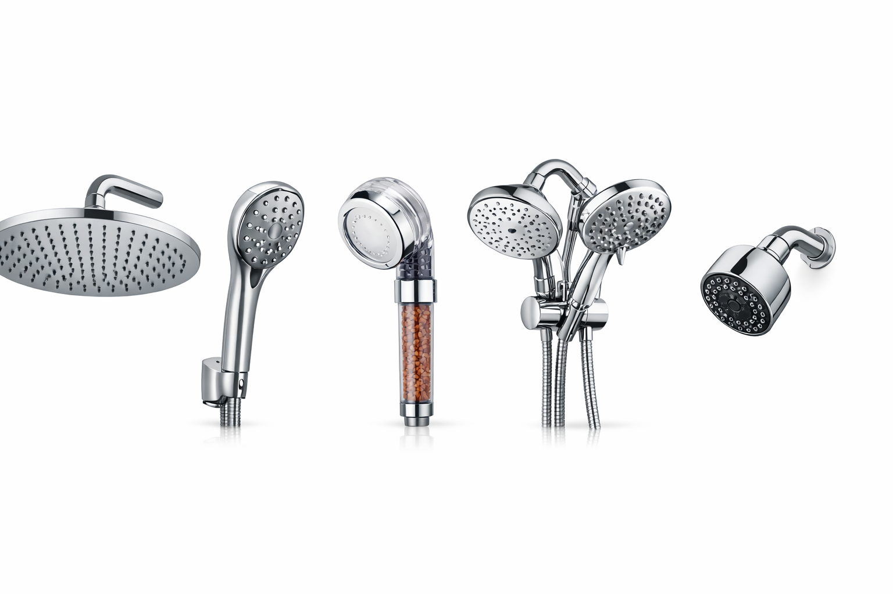

How to Choose the Right Shower Head: Complete Buyer's Guide (2026)

Bathroom Fixtures Expert
Hands-on testing of 50+ shower heads to help you find the right one.
Quick Answer: How to Choose a Shower Head
Start with your priority: If you want strong pressure, choose a fixed high-pressure head. For a spa experience, go with an 8"+ rain head. For versatility, pick a dual combo system. For healthier skin and hair, choose a filtered model. Budget $15-40 for a quality option that will last years. Most install in under 10 minutes with no tools.

Shopping for a new shower head can be surprisingly overwhelming. Walk into any home improvement store or browse Amazon, and you'll face hundreds of options at every price point. Fixed, handheld, rain, filtered, combo — the choices are endless, and the marketing claims even more so.
The truth is, the "best" shower head depends entirely on your specific situation: your water pressure, your plumbing, your budget, and what kind of shower experience you actually want. A rain shower head that transforms one bathroom into a spa could deliver a frustratingly weak drizzle in another home with low water pressure.
After testing over 50 shower heads across every category, we created this guide to cut through the noise. We'll walk you through every type of shower head, the key features that actually matter, and specific product recommendations at every price point. By the end, you'll know exactly which shower head is right for your bathroom. If you're already clear on what you want, check our best shower heads roundup for our top tested picks.
Types of Shower Heads
Understanding the five main types of shower heads is the first step to making the right choice. Each type excels in different situations, and knowing the tradeoffs will save you from buyer's remorse.
1. Fixed (Wall-Mounted) Shower Heads
The classic choice. Fixed shower heads attach directly to the shower arm coming out of your wall. They're the most common type and for good reason: they're simple, reliable, and deliver consistent water pressure. Modern fixed heads come with multiple spray patterns (rain, massage, mist) controlled by a dial or lever.
Best for: Homeowners who want strong, consistent pressure without complexity. Ideal for standard showers where reach and flexibility aren't concerns.

SparkPod High-Pressure Rain Shower Head
Why we recommend it: The SparkPod delivers impressive pressure for a rain-style fixed head. Its 6-inch face provides wide coverage while maintaining strong flow. Tool-free installation in under 2 minutes.
Check Price on Amazon2. Rain Shower Heads
Rain shower heads feature a wide, flat face (typically 8-12 inches) that simulates the sensation of standing in warm rainfall. They're mounted overhead — either on a standard shower arm with an extension or directly in the ceiling. The spray pattern is gentle and enveloping rather than focused and forceful.
Best for: Anyone seeking a luxurious, spa-like shower experience. Works best in homes with good water pressure (40+ PSI), since the wide face distributes water across a larger area. If you already have a specific rain head in mind, check our dedicated roundup.

NearMoon Square Rain Shower Head (8")
Why we recommend it: Ultra-thin design with self-cleaning silicone nozzles that resist mineral buildup. The 8-inch square face provides excellent coverage without sacrificing too much pressure. Stainless steel construction at a budget-friendly price.
Check Price on Amazon3. Handheld Shower Heads
Handheld shower heads connect to a flexible hose (typically 60-72 inches), allowing you to detach the head and direct water exactly where you need it. Most come with a bracket mount so you can use them as a fixed head when desired. They're the most versatile option available.
Best for: Families with children or pets, anyone with mobility issues, and people who want the flexibility to rinse hard-to-reach spots. Also excellent for cleaning the shower itself. See our full comparison in handheld vs fixed shower heads.
4. Dual / Combo Shower Systems
Why choose when you can have both? Dual shower systems combine a fixed head with a handheld head, connected to a diverter valve. You can use either head independently or both simultaneously for the ultimate shower experience. Combo systems have become increasingly affordable, with quality options starting around $25.
Best for: Anyone who wants maximum versatility. Couples with different shower preferences. Homes where you want a luxury feel without a full bathroom renovation.

BRIGHT SHOWERS Dual Shower Head System
Why we recommend it: This combo system pairs a 5-inch fixed head with a handheld unit, both offering multiple spray settings. The 3-way diverter lets you use either head or both together. Easy installation onto any standard shower arm.
Check Price on Amazon5. Filtered Shower Heads
Filtered shower heads incorporate a replaceable filter cartridge that removes chlorine, heavy metals, sediment, and other impurities from your water before it reaches your skin and hair. If you live in an area with hard or heavily treated water, a filtered head can make a dramatic difference in how your skin and hair feel after showering.
Best for: Anyone with hard water, dry skin, colored or treated hair, or sensitivity to chlorine. Particularly beneficial in older homes with aging pipes. The ongoing cost of replacement filters ($10-15 every 6 months) is minimal.

AquaHomeGroup Luxury Filtered Shower Head
Why we recommend it: 15-stage filtration system that removes chlorine, fluoride, and heavy metals. Includes vitamin C and essential oils cartridge. Multiple spray modes plus a handheld design make it both functional and health-conscious.
Check Price on Amazon


Key Features to Consider
Once you've decided on a type, these five features will determine your day-to-day satisfaction with your shower head.
Spray Patterns
Most modern shower heads offer 3-7 spray modes. The essential ones are:
- Full body / Rain: Wide, even coverage for daily showering
- Massage / Pulsating: Concentrated, rotating jets for sore muscles
- Mist: Fine, gentle spray — great for rinsing soap without harsh pressure
- Pause / Water-saving: Reduces flow to a trickle while you lather up
In our testing, we found that 3-4 quality spray modes outperform 7+ mediocre ones. Look for a dial or lever mechanism that switches smoothly between settings. Avoid click-button designs, as they tend to jam after a few months.
Material & Finish
The material affects durability, weight, water taste, and resistance to mineral buildup. We cover this in depth in the Material Guide section below.
Face Size
Shower head diameter directly impacts the shower experience. Smaller faces (4") deliver focused, high-pressure streams. Larger faces (8-12") create a gentler, wider rainfall effect. The sweet spot for most people is 6 inches — wide enough for good coverage, small enough to maintain decent pressure. Jump to our Size Guide for a detailed comparison.
Water Pressure Compatibility
This is arguably the most important factor and the one most buyers overlook. A shower head designed for high-pressure systems will underperform in a low-pressure home, and vice versa. Read our Water Pressure section to figure out what you need.
Filtration
Even if you don't choose a dedicated filtered shower head, some models include basic filtration screens. For homes with hard water, filtration is worth prioritizing. Signs you need filtration include: white mineral deposits on fixtures, dry or itchy skin after showering, and hair that feels brittle or dull.
Water Pressure & Flow Rate Explained
Understanding water pressure and flow rate is crucial because they determine how every shower head will actually perform in your home.
What's the Difference?
- Water pressure (PSI): The force pushing water through your pipes. Measured in pounds per square inch. Residential range is typically 30-80 PSI. Ideal is 45-55 PSI.
- Flow rate (GPM): How much water comes out per minute. Federal maximum is 2.5 GPM. Some states (CA, CO, NY) require 2.0 GPM or less.
How to Test Your Water Pressure
Before buying any shower head, test your pressure:
- Bucket test: Place a 1-gallon bucket under your shower. Turn on full blast. Time how long it takes to fill. If it fills in 24 seconds = 2.5 GPM (strong). If 30+ seconds = you have low pressure.
- Pressure gauge: Attach a $10 water pressure gauge to an outdoor spigot. Read the PSI directly.
Flow Rate Comparison
| Flow Rate | Feel | Water Use (10-min shower) | Best For |
|---|---|---|---|
| 2.5 GPM | Strong, full | 25 gallons | Maximum pressure fans |
| 2.0 GPM | Good, balanced | 20 gallons | Most households |
| 1.8 GPM | Moderate | 18 gallons | Water-conscious / CA-compliant |
| 1.5 GPM | Light | 15 gallons | Maximum water savings |
Material Guide
The material your shower head is made of affects its durability, weight, resistance to corrosion, and how well it handles mineral buildup over time. Here's what you need to know about each option.
| Material | Durability | Weight | Price Range | Best For |
|---|---|---|---|---|
| Chrome-Plated ABS | Good (3-5 years) | Light | $10-25 | Budget-friendly, rentals |
| Stainless Steel | Excellent (10+ years) | Medium | $15-40 | Long-term value, most homes |
| Solid Brass | Superior (15+ years) | Heavy | $40-100+ | Premium bathrooms, durability |
| ABS Plastic | Fair (2-3 years) | Very light | $5-15 | Temporary, guest bathrooms |
Our recommendation: For most buyers, stainless steel hits the sweet spot. It resists corrosion, looks premium, won't crack like ABS, and costs far less than brass. Chrome-plated ABS is fine for renters or budget-conscious buyers who plan to upgrade later. Avoid uncoated plastic unless it's a temporary solution.
Size Guide: 4" vs 6" vs 8" vs 12"
Shower head size isn't just about aesthetics — it fundamentally changes your shower experience. Here's what each size actually feels like in practice.
| Size | Coverage | Pressure Feel | Best For |
|---|---|---|---|
| 4 inches | Focused, targeted | Strong, concentrated | Small showers, high-pressure fans |
| 6 inches | Balanced coverage | Good pressure, nice spread | Most standard showers (our top pick) |
| 8 inches | Wide rainfall | Moderate, gentle | Spa experience, good pressure homes |
| 12 inches | Full body coverage | Gentle, distributed | Luxury bathrooms, ceiling-mount only |
The golden rule: The larger the shower head face, the more water pressure you need to maintain a satisfying experience. A 12-inch rain head in a home with 35 PSI water pressure will feel like standing under a leaky gutter. Test your pressure first (see Water Pressure section), then choose your size accordingly.
Budget Guide: What to Expect at Every Price Point
Shower heads range from $5 to $300+, but the sweet spot for quality-to-value falls between $15 and $50. Here's what your money actually gets you at each tier.
$10-20: Budget Picks
At this price, you'll find ABS plastic or chrome-plated models with 3-5 spray settings. They work fine and often deliver surprisingly good performance, but may not last more than 1-2 years. The finish can wear, and mechanisms may stiffen over time.
- Expect: Basic spray settings, plastic construction, simple installation
- Good for: Rentals, guest bathrooms, first apartments, testing a new type
$20-35: Best Value (Our Sweet Spot)
This is where the magic happens. You'll find stainless steel construction, 5-7 spray modes, silicone anti-clog nozzles, and quality engineering. Most of our top picks from the best shower heads roundup fall in this range. These heads perform comparably to $80+ models from big-box stores.
- Expect: Stainless steel or quality chrome, multiple spray modes, self-cleaning nozzles
- Good for: Primary bathrooms, long-term use, most buyers
$35-50+: Premium Options
At this tier, you get brass internals, dual/combo systems, built-in filtration, LED temperature indicators, or designer finishes (matte black, brushed gold). The performance improvement over the $20-35 range is marginal, but the build quality and features are noticeably better.
- Expect: Brass construction, combo systems, filtration, premium finishes
- Good for: Bathroom renovations, filtered water needs, design-conscious buyers
Installation Basics
One of the best things about upgrading your shower head is how easy it is. The vast majority of models require no tools and no plumber. If you can screw in a light bulb, you can install a shower head.
What You'll Need
- Teflon tape (plumber's tape) — included with most shower heads, costs $1 at any hardware store
- Adjustable wrench (optional) — only needed if your old shower head is stuck
- Cloth or rag — to protect the finish if you use a wrench
Step-by-Step Installation (Under 10 Minutes)
- Remove the old head: Turn counterclockwise by hand. If stuck, wrap with a cloth and use a wrench.
- Clean the threads: Remove old Teflon tape and any mineral buildup from the shower arm threads.
- Apply Teflon tape: Wrap 3-5 times clockwise around the threads. This prevents leaks.
- Attach the new head: Screw on clockwise by hand until snug. Don't over-tighten.
- Test for leaks: Turn on the water. If you see dripping at the connection, tighten slightly or add more Teflon tape.
When to Call a Plumber
You only need a professional for: ceiling-mount rain heads requiring new plumbing, whole-house shower panel systems, or if you discover corroded pipes behind the wall. Standard swap-outs are always DIY.
Common Mistakes to Avoid
After reading thousands of shower head reviews and testing dozens ourselves, these are the mistakes we see buyers make most often.
-
Ignoring Your Water Pressure
The #1 reason for 1-star shower head reviews. A luxury rain head in a low-pressure home = disappointment. Always test your pressure first using the bucket method described in our water pressure section.
-
Choosing Size Over Substance
Bigger isn't always better. A well-engineered 6-inch head will outperform a cheap 12-inch head every day. Focus on build quality and nozzle design rather than diameter alone.
-
Forgetting About Maintenance
Every shower head needs occasional cleaning. Models without silicone nozzles will clog 3x faster in hard water areas. Budget an extra $5-10 for a model with self-cleaning nozzles — it pays for itself in longevity.
-
Over-Tightening During Installation
Cranking your new shower head with a wrench can crack plastic threads or damage the finish. Hand-tight plus a quarter-turn is all you need. Let the Teflon tape do the sealing work.
-
Buying Based on Spray Setting Count Alone
A shower head with "10 spray settings" sounds impressive, but if 7 of those settings feel nearly identical, you're paying for marketing. Look for 3-5 distinct spray modes with smooth transitions between them.
-
Skipping Filtration in Hard Water Areas
If you see white deposits on your faucets, you have hard water. An unfiltered shower head in hard water will clog faster, and your skin and hair will suffer. The small added cost of a filtered model is worth it.
Frequently Asked Questions
What type of shower head gives the best water pressure?
Fixed shower heads with smaller nozzle openings and fewer spray settings tend to deliver the strongest pressure. Look for models labeled "high pressure" with a flow rate of 2.5 GPM. Handheld models can also deliver excellent pressure when fitted with a pressure-boosting design. See our high-pressure shower head picks for specific recommendations.
How often should I replace my shower head?
Most shower heads last 6 to 8 months before mineral buildup affects performance. However, a quality stainless steel or brass shower head can last years with regular cleaning. Filtered shower heads need filter cartridge replacements every 6 months. If you notice reduced flow or uneven spray, try soaking the head in white vinegar overnight before replacing it.
Can I install a new shower head myself?
Yes! Most shower heads install in under 10 minutes with no tools required. Simply unscrew the old head, wrap the threads with Teflon tape, and screw on the new one hand-tight. No plumber needed for standard threaded connections (1/2 inch NPT). See our installation guide above for the full walkthrough.
Are filtered shower heads worth it?
If you have hard water or chlorinated municipal water, a filtered shower head can make a noticeable difference. Filters reduce chlorine, heavy metals, and sediment which can dry out skin and hair. The filter cartridge cost ($10-15 every 6 months) is minimal compared to the benefits. People with eczema, psoriasis, or color-treated hair tend to notice the biggest improvement.
What is the difference between 2.5 GPM and 1.8 GPM shower heads?
GPM stands for gallons per minute. A 2.5 GPM shower head is the federal maximum and delivers strong flow. A 1.8 GPM model saves about 28% more water and is required in some states (California, Colorado). Modern low-flow designs use air-injection technology to maintain the feeling of pressure at lower flow rates, so you may not notice a difference in practice.
Rain shower head vs regular shower head: which is better?
It depends on your priority. Rain shower heads (8-12 inches) provide a luxurious, spa-like experience with gentle, wide coverage. Regular fixed heads (4-6 inches) deliver stronger, more focused pressure that's better for rinsing thick hair and muscle relief. If you want both experiences, a dual/combo system lets you switch between the two. Read our rainfall shower head guide for more details.
Our Top Picks by Category
Based on our hands-on testing across every category, here are our specific recommendations. Each of these models earned its spot through real-world performance, not marketing claims.
SparkPod Rain Shower Head
6" face, stainless steel, tool-free install
~$17
View on AmazonFor our complete ranked list with full reviews and gallery images, see our Best Shower Heads of 2026 roundup article. We update it monthly as we test new models.